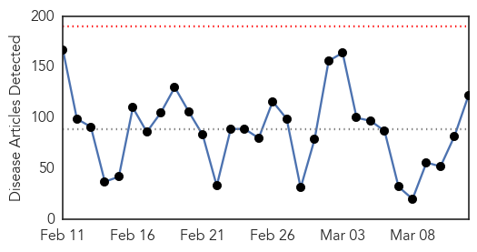
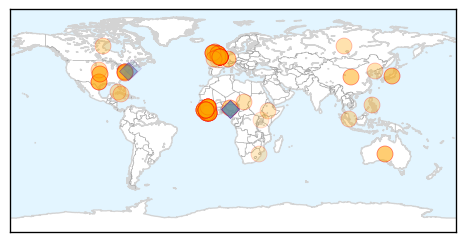

Measles
30-Day Web Trend
0 alerts, 0 warnings

30-Day Twitter Trend
3 alerts, 0 warnings

Article Locations

Article Confidences

Top Articles:
- 1.000
- Why measles could be worse for West Africa than Ebola
- 1.000
- Ebola Crisis Could Fuel Measles Outbreak in West Africa
- 1.000
- Measles Could Cause More Deaths Than Ebola In West Africa
- 0.999
- Countries Reeling From Ebola Are Facing A Big Measles Threat
- 0.998
- Ebola-sapped West African countries now face serious measles risk
- 0.994
- Plummeting vaccination rates mean measles could kill more than Ebola in affected countries
- 0.985
- Berlin counts 254 new cases of measles in 2015
- 0.977
- Measles outbreak in Niagara is over
- 0.973
- Measles cases predicted to almost double in Ebola epidemic countries
- 0.964
- Rise in measles cases predicted in Ebola-stricken areas
- 0.957
- 119 Confirmed Measles Cases in Quebec
- 0.950
- Confirmed measles cases offer vaccination reminder
- 0.936
- Publishing Local News and Entertainment for over 29 years in San Luis Obispo County, CA
- 0.933
- Health officials say 119 measles cases in Quebec
- 0.932
- Kyrgyzstan Kyrgyzstan: Bishkek Hopes it Has Passed Peak Measles
- 0.901
- Experts discuss the myths and misinformation surrounding vaccinations
- 0.890
- Doctor stresses vaccination safety
- 0.882
- Quebec rushes to vaccinate against measles in Joliette
- 0.878
- German biologist who denies measles virus exists ordered to pay
- 0.874
- Should we withhold child benefits from those who don't vaccinate?
- 0.869
- Delay vaccines for children? - IronMountainDailyNews.com
- 0.867
- Quebec rushes to vaccinate against measles in Joliette
- 0.857
- Measles kill toddler as Berlin school closes
- 0.853
- German biologist who denies measles virus exists ordered to pay
- 0.847
- Low vaccination rates could be improved by national registry: N.S. public health official - Halifax
- 0.841
- Aliso Niguel High School
- 0.839
- Medical Tyranny in Action in Oregon
- 0.828
- Africa overtaking US in the race against measles
- 0.828
- Tell lawmakers vaccines work
- 0.784
- View from QCA: Vaccinations safe, effective
- 0.721
- The Financial Gazette – Zimbabwe News
- 0.709
- Number of measles cases in Quebec jumps to 119 in region northeast of Montreal
- 0.678
- Measles Outbreak, Mandatory Vaccines in California: Doctors Bob Sears, Jay Gordon Counter Dr. Pan’s SB 277 on Public Radio
- 0.664
- CJAD 800 – News. Talk. Radio. :: Docs to Joliette students: get measles shot or stay home :: News
- 0.609
- Infant death sparks measles jab debate
- 0.574
- Alberta Liberal leader calls for mandatory vaccinations among kids in schools
- 0.540
- 5 Ways Obamacare Promotes Childhood Immunization and Vaccines?
Top Tweets:
- 0.680
- Very few people (about 3 out of 100) who get 2 doses measles vaccine still get measles if exposed to the virus.
Ebola
30-Day Web Trend
0 alerts, 0 warnings

30-Day Twitter Trend
4 alerts, 3 warnings

Article Locations
Article Confidences

Top Articles:
- 1.000
- More children at risk of measles in wake of Ebola epidemic
- 1.000
- No new Ebola cases in Liberia for more than two weeks: WHO
- 1.000
- American diagnosed with Ebola to be flown to US from Sierra Leone
- 1.000
- British Army medic with Ebola evacuated with two other suspected cases
- 1.000
- UK national contracts Ebola in Sierra Leone
- 1.000
- More children at risk of measles in wake of Ebola epidemic -- NationNews Barbados -- Local, Regional and International News nationnews.com
- 1.000
- Ebola death toll surpasses 10,000: WHO
- 1.000
- WHO: Ebola cases keep coming, but footprint is smaller
- 1.000
- WHO: Ebola Deaths Pass 10K Mark
- 1.000
- More children at risk of measles in wake of Ebola epidemic
- 1.000
- Ebola Outbreak Disrupted Routine Medical Care in West Africa
- 0.999
- British Healthworker Tests Positive For Ebola
- 0.999
- New Ebola patient arrives for treatment at NIH Bethesda
- 0.999
- Two more healthcare workers return to UK
- 0.999
- American Ebola patient to get treatment in Maryland
- 0.999
- Researchers Warn of Ebola Fallout
- 0.999
- US Health Worker With Ebola Headed Home for Treatment
- 0.999
- WHO and WFP unite to gain zero Ebola cases as Koroma retreats to fight personal political battle
- 0.999
- Briton diagnosed with Ebola in Sierra Leone
- 0.999
- British Ebola patient came into contact with four colleagues, officials say
- 0.999
- Briton diagnosed with Ebola in Sierra Leone
- 0.999
- UPDATE 1-UK Ebola patient home for treatment, 4 more for monitoring
- 0.999
- 4 Came Into Contact With Infected Worker; Medic And 2 Others Evacuated
- 0.999
- British healthcare worker contracts Ebola on Falmouth-based medical ship mission to Africa
- 0.999
- Health worker with Ebola admitted to NIH
- 0.999
- UK Ebola patient to arrive in London today
- 0.999
- American Ebola patient to be treated at the NIH, 2nd case to date
- 0.999
- American with Ebola to return to U.S. from Sierra Leone for treatment
- 0.998
- UK health worker with Ebola flying back, 4 others being assessed
- 0.998
- UK military healthcare worker tests positive for Ebola in Sierra Leone
- 0.998
- Ebola military healthcare worker flown back to the UK to begin her treatment
- 0.998
- New Cases Quickly Disappearing, To Detriment Of Vaccine Development
- 0.998
- Sierra Leone sees worrying spike in Ebola cases over week
- 0.998
- WHO and World Food Programme join forces to reach zero Ebola cases
- 0.998
- Ebola Briton treated in hospital
- 0.998
- Ebola Briton treated in hospital
- 0.998
- Ebola Briton treated in hospital
- 0.998
- Ebola Briton treated in hospital
- 0.998
- Ebola: British patient and five colleagues flown home
- 0.997
- Tekmira Pharmaceuticals Corp Begins Trial Of TKM-Ebola-Guinea In Sierra Leone
- 0.997
- Ebola crisis as UK soldier with virus is quarantined in London hospital
- 0.997
- British military healthcare worker infected with Ebola arrives at Royal Free
- 0.997
- Ebola cases in the United States
- 0.997
- Ebola infected British healthcare staff flown back from Sierra Leone – 4 others under observation
- 0.997
- American Ebola patient to be treated near US capital
- 0.996
- No New Ebola Case in Liberia
- 0.996
- Liberia Awaits Ebola-free Declaration to Remember its Victims
- 0.995
- Newcastle hospital on standby to receive military workers screened for Ebola
- 0.994
- Waning interest in Ebola is biggest threat to overcoming virus
- 0.994
- British healthcare worker with Ebola being flown to the UK
Showing top 50 articles...
Top Tweets:
- 0.995
- Ebola Outbreak Update: New Cases Quickly Disappearing, To Detriment Of ... - Medical Daily http://t.co/DUahH6DmLC ebola EVD
- 0.966
- 10000 have died from Ebola in current outbreak, WHO announces - 10News http://t.co/go6q82a83E ebola EVD
- 0.957
- Ebola Report. 24,247 cases, 9,961 deaths. Guinea, 58 cases, SierraLeone 58 new cases, Liberia 0 cases http://t.co/d2izaWX9iw
- 0.954
- Ebola Deaths Top 10000 - TIME http://t.co/WAOYXFzIz4 ebola EVD
- 0.865
- NBC's Nancy Snyderman Resigns After Ebola Quarantine Scandal - ABC News http://t.co/0sTcIptL7Y ebola EVD
- 0.864
- RT: @UNMEER The first symposium on the social sciences and the Ebola outbreak in West Africa http://t.co/983ye5aEnV
- 0.813
- RT: News: NIH to admit American healthcare worker with Ebola virus disease http://t.co/ClZUW2AoZe
- 0.812
- Note d'Orientation et Protocoles - @Ecoles sécurisées pour la lutte contre Ebola en milieu scolaire en Guinée http://t.co/3xyCvPHAbh
- 0.811
- Liberian Leader Concedes Errors in Response to Ebola - New York Times http://t.co/Zw6xUPDMZt ebola EVD
- 0.792
- Liberia Awaits Ebola-free Declaration to Remember its Victims - Voice of America http://t.co/R8vCfn9yMe ebola EVD
- 0.756
- Protocols for Safe School Environments in the Ebola Outbreak in Liberia http://t.co/7YPbrqMk8u
- 0.754
- WHO: Waning interest is biggest risk in race against Ebola - Fox News http://t.co/ofcry6lAK9 ebola EVD
- 0.699
- The Ebola fight is not over: Ebola deaths pass 10,000 http://t.co/c6f2HCHbEB TackleEbola ZeroCases http://t.co/DVxXZxNaRm
- 0.698
- Ebola cases keep coming, but footprint is smaller http://t.co/OURQlNJfe4
- 0.669
- Ebola Outbreak Could Be Ended by Summer WHO http://t.co/VD5aPsXOQy
- 0.652
- Daily news pouch http://t.co/qeCzx89JmD includes: avianflu avianinfluenza Ebola EbolaResponse MERS
- 0.634
- UK military healthcare worker diagnosed with Ebola in Sierra Leone is being brought home for care afterall. https://t.co/iftuBOCJCd
- 0.606
- NBC's Nancy Snyderman Quits After Ebola Scandal - http://t.co/eWCQ11Yitk http://t.co/RvPfn8LbZC ebola EVD
- 0.597
- Sénégal. Six régions identifiées pour abriter des centres de traitement Ebola http://t.co/T3jkTOTTud
- 0.579
- RT: @richardhorton1 "Can Ebola be a route to nation-building?" healthsystems Guinea Liberia SierraLeone http://t…
- 0.558
- Nancy Snyderman Will Leave NBC News In Wake of Ebola Incident - Variety http://t.co/KOULFwSoNH ebola EVD
- 0.539
- Waning interest in Ebola is biggest threat to overcoming virus http://t.co/wUfbu6x0nr via Ebolacrisis
- 0.532
- 10000 people have died from Ebola. EbolaResponse partners and are working to end the epidemic. More on http://t.co/JD8vtDG2rq
- 0.525
- In Sierra Leone, yellow is the colour of Ebola awareness. Read the full story behind it on https://t.co/EK2PW9odSD http://t.co/PRfIPTwc8u